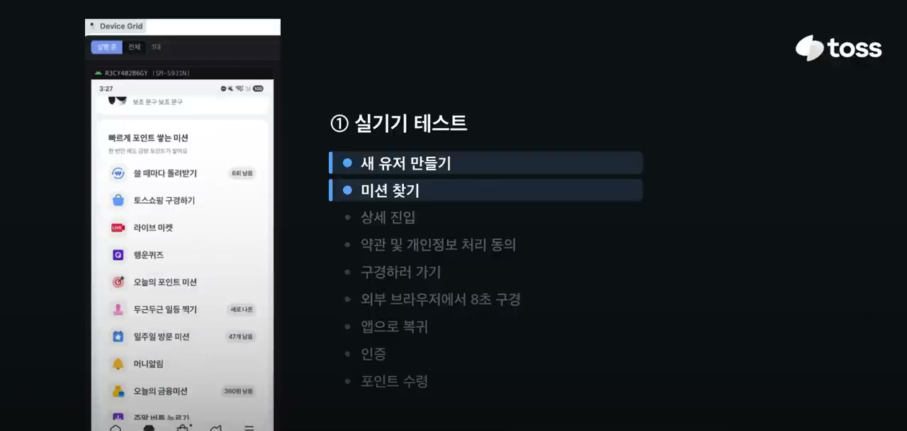
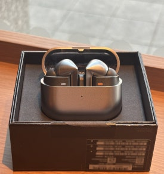

모아요 — 지역 소식을 한곳에
프론트엔드·AI·크롤링을 맡아, 공지의 맥락을 놓치는 분류에 유사 예시 검색과 규칙을 보완했습니다.
AI classification / Embedding / Few-shot문제 해결 과정
안전 주의 공지가 행사로 분류되는 문제에서 출발했습니다. 공지와 예시의 임베딩 유사도로 Top-K 예시를 선택하고, 특정 단어에 대한 분류 규칙을 보완했습니다. 모델 재학습이 아닌 입력 예시와 분류 흐름의 개선입니다.
01 / PORTFOLIO
AI를 활용해 웹 기능 구현부터 배포와 운영 확인까지 연결하는 개발자 길태은입니다.
프론트엔드·AI·크롤링을 맡아, 공지의 맥락을 놓치는 분류에 유사 예시 검색과 규칙을 보완했습니다.
AI classification / Embedding / Few-shot안전 주의 공지가 행사로 분류되는 문제에서 출발했습니다. 공지와 예시의 임베딩 유사도로 Top-K 예시를 선택하고, 특정 단어에 대한 분류 규칙을 보완했습니다. 모델 재학습이 아닌 입력 예시와 분류 흐름의 개선입니다.
분산된 배포 절차를 한 흐름으로 연결하고, 새 Pod의 Ready 상태와 실제 이미지로 배포 결과를 확인했습니다.
FastAPI / Docker / Kubernetes서비스·버전을 선택해 빌드와 이미지 게시, Kubernetes 반영을 연결하는 흐름을 제안하고 구현했습니다. 기존 Pod가 남아 있는 상황을 성공으로 오인하지 않도록 새 Pod 생성·Ready·이미지 ID를 확인했습니다. 실제 사용된 기존 콘솔을 기준으로 한 사례입니다.
AI 수정 제안의 형식 검증과 반복 제한, 카드 ID 식별을 보완해 사용자가 확인하고 적용하는 흐름을 다듬었습니다.
TypeScript / Go / React잘못된 제안이 반복되거나 제목 없는 카드를 식별하지 못하는 문제를 다뤘습니다. 실행 시 스키마 검증, 반복 실패 종료, ID 우선 식별을 적용하고 이전 제안의 적용 상태를 대화 맥락에 포함했습니다. 테스트·병합 기록이 있으며 최종 운영 배포 결과는 별도 확인 대상입니다.
PROJECT COLLECTION
작은 아이디어부터 실제 서비스까지. 궁금한 프로젝트를 눌러보세요.
글을 불러오고 있습니다.
004토스의 발표에서 본 실기기 기반 E2E, 에이전트 기기 제어, Replay 중심의 프론트엔드 검증 시스템.

003메인 스레드가 병목이 되는 이유와 작업을 나누고, 모으고, 미루고, 밖으로 보내는 방법을 정리했다.
 002
002
그래도 이제는 실패하거나 모른다는 이유로 삶 전체를 멈추지 않는다.
 001
001
방황의 끝에서 만난 SSAFY 13기, 그리고 단단한 토대를 만든 1학기.

02 / About